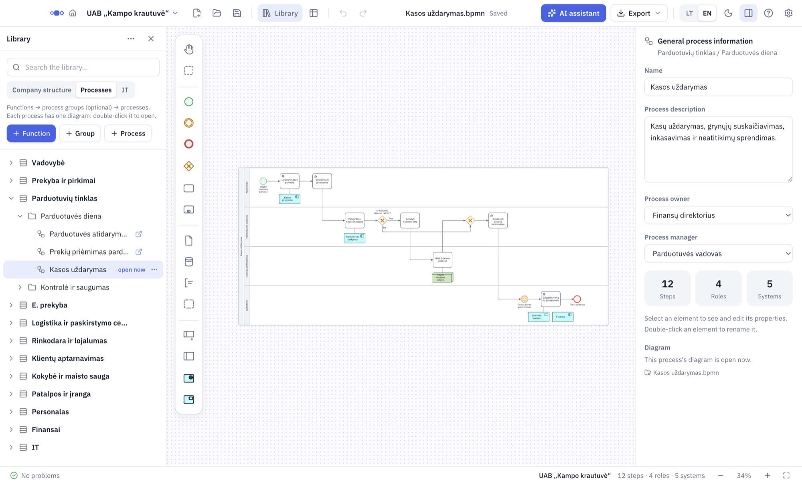

From an empty library to every user’s screen
In the order most people work: company structure first, then processes and diagrams, sharing last. This guide doesn’t teach BPMN – only where things are in Promodo.
Install and start
Download and install Promodo. It opens on Home – the same screen users see. Your place is the Architect’s workspace. The first time you open it, a short tour shows the main buttons.
LT / EN at the top switches the language. Everything is saved automatically.
Company library
One library is one company. A library is a folder with all of a company’s processes, structure and diagrams. By default it is Documents/Promodo.
- In the Architect’s workspace, click the company name at the top left.
- Choose New library… and type the company name.
- Start with an empty library, or a copy of an existing one (as a template).
- Click Choose a place and create.
If users will open the library from a shared folder, create the library there right away (OneDrive, Google Drive or a network drive).
Switch between companies in the same menu, under Libraries on this computer.
Company structure
Start here, because diagram lanes are linked to responsibilities.
- On the left, open Library and the Company structure tab.
- Click + Function and add the company’s functions (for example Sales, Finance).
- Add the responsibilities (roles) in each function, for example Cashier.
Reorder by dragging, or with Move to….
Processes
- The Processes tab uses the same functions. Add a + Group if you need one.
- Click + Process. On the right, under General process information, write the description and choose the Process owner and Process manager.
- Double-click the process to open its diagram. If it has none yet, Promodo creates a blank one.
Every process has one diagram. Files are kept in the library folder; there’s nothing to save.
Your first diagram
- The pool is the process, lanes are responsibilities. When you add a lane, Promodo asks which responsibility it is for.
- Elements are in the palette on the left: drag one onto the diagram, or click it and then click where it should go. Click a step to add the next element, a document, a database or an IT system right next to it.
- For decisions there are two exclusive gateways: a plain diamond and one with an X. They mean the same; use the one your team is used to. Change type switches between them.
- Check at the bottom shows BPMN mistakes and offers a fix. It never stops you drawing.
- Arrows tangled? Right-click an empty spot and choose Tidy up arrows.

Step fields
Select a step and its fields appear on the right: responsible, system, documents, duration and Result. The Process description (Excel) and Word documentation are built from them, so they’re worth filling in.
IT systems
- In the IT tab, add systems and their modules.
- In a diagram, click a step and add an IT system – it connects with a dotted line. Link it to the system in the library.
IT systems use ArchiMate notation. The Overview shows where each one is used.
Diagrams from other tools
Open a diagram from another BPMN tool with Open…: both .bpmn and .bpm files work. Layout, lanes, element types, conditions and data come across.
An opened diagram isn’t linked to the library automatically: link the pool and lanes yourself (Check lists them and offers Link…). Custom attribute values aren’t imported yet.
Architect password
Without one, any user who opens the shared folder could also open the Architect’s workspace.
- Click the company name, then Set architect password…
- Keep the recovery code – you need it if you forget the password.
Everyone else can only view. On your own computer you can tick Remember on this computer. When you leave, Lock Architect.
Sharing with users
The simple way: keep the library in a shared folder. Users open it in their Promodo and always see the latest version. Send them the folder link and this guide.
Without a shared folder: in the company name menu, choose Publish…
- Save a package file (.promodo) – one file you can send by email. You can protect it with a password.
- Update a shared folder – a view-only copy in another folder.
- Write what’s new. Every publish gets a version number and a date.
Users without Promodo? The Handbook saves the whole library as a searchable web page or a PDF.
Only one person should edit at a time: two architects in the same folder would overwrite each other’s changes.
Export
The Export button at the top:
- Images for presentations: PNG (crisp, 2×), PNG with transparent background, SVG, vector PDF.
- Documents: Word documentation, Process description (Excel).
- BPMN 2.0 file for other tools.
Every file carries company, version and date. You can switch that off in the same menu.
Overview and gaps
Overview (at the top, or ⌘⇧O / Ctrl+Shift+O) reads every diagram: steps, processes, responsibilities, IT systems and a Process × responsibility table. The Gaps tab shows unlinked lanes, processes without a diagram and unused items. Everything can be exported with Export to Excel.
AI assistant (optional)
Describe a process in words or add a photo of a whiteboard – the assistant draws a draft for you to review and fix. It also answers how-to questions about Promodo.
It needs the internet and your own Anthropic key: Settings → AI assistant. Everything else works without it.